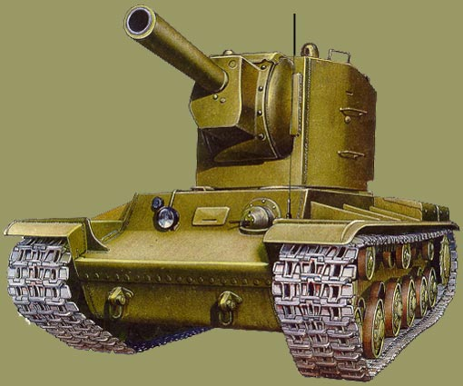
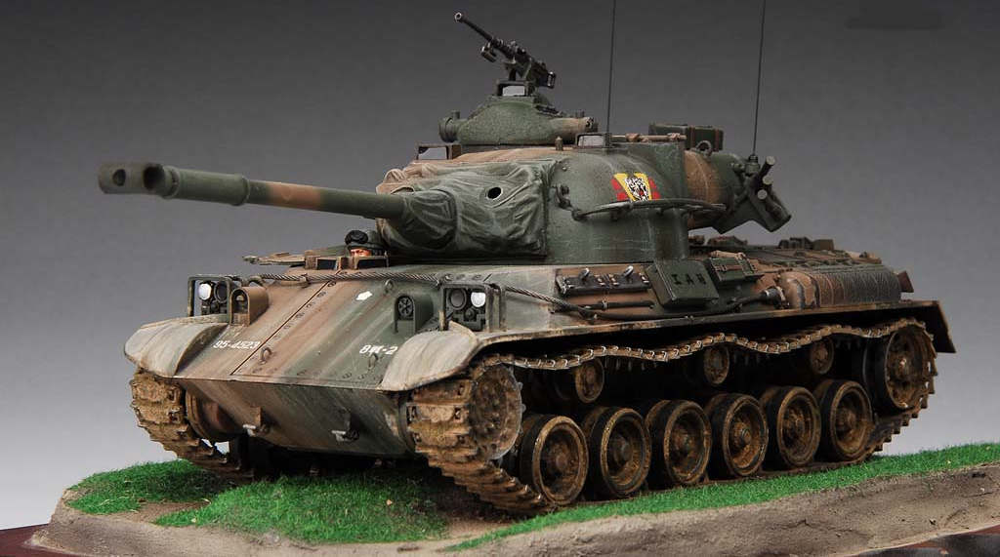

Game is inspired from the most deadliest KV-2 TANK heavy tank


The T4-B heavy tank was a multi-purpose tank used by the Rebel Alliance. The
T4-B was armed with laser cannons which were effective against vehicles and
concussion missile tubes which were effective against infantry, structures,
turrets, etc.
Strengths
T4-B's were virtually good against anything and if they grouped together could
be effective against AT-ATs. They could also run over infantry because of
treads. They had weapons that were effective against just about everything and
had thick armor.
Weaknesses
The T4-B had virtually no weaknesses, but one of them was low speed and short on
maneuverability. They also took nearly ages to build on the galactic map. Even
with two heavy vehicle factories, they still had a slow build time.
Characteristics
The T4-B was a multi-purpose tank, with virtually no weaknesses, they were
durable, had thick armor, had a lot of firepower, and were effective against
most vehicles and walkers. Because of the concussion missile launchers, it's
ideally best to have these hang back with your artillery then when the enemy
starts to close in have them switch to their powerful anti-armor laser cannons.
You probably wont have to worry about infantry with these, as the rebels, your
artillery should be able to mop up any infantry in nearly one round of fire. The
cannons are generally best against shielded units and even unshielded units,
especially 2-M Repulsor Tanks. The T4-B has the most effect against 2-M Repulsor
Tanks, TIE Maulers, AT-ST's, and AT-AT's when in groups.